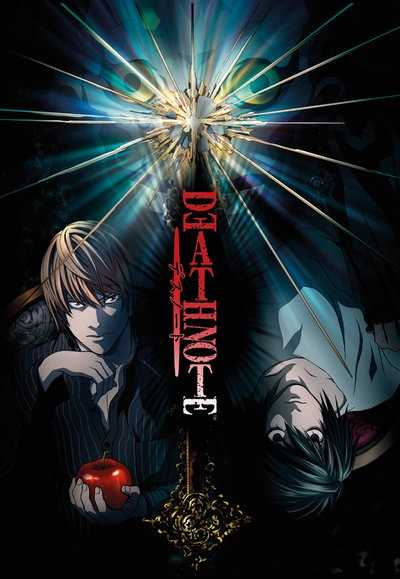

| Directed by | Tetsurõ Araki |
| Produced by | Toshio Nakatani
Manabu Tamura Masao Maruyama |
| Written by | Toshiki Inoue |
| Music by | Yoshihisa Hirano
Hideki Taniuchi |
| Studio | Madhouse |
| Licensed by |
AUS
Madman Entertainment
NA Viz Media UK Manga Entertainment |
| Original network | Nippon TV |
| Original run | October 3,2006 - June 26,2007 |
| Episodes | 37 |